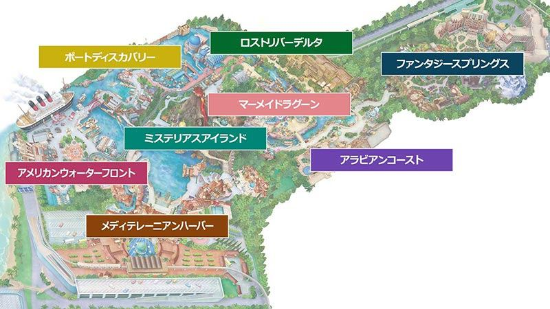

私たちがディズニーのパークを歩いていると、ふと見かける「ガリオン船」や「天球儀」が美しく描かれた紋章。それこそが、世界中のアトラクションやエリアを繋ぐ秘密のネットワーク、「S.E.A.（Society of Explorers and Adventurers：探検家・冒険家学会）」の印です。
S.E.A.は、それぞれのエリアやアトラクションを個別の独立した物語として終わらせるのではなく、世界中のパークを一つの広大な「生きた歴史」として美しく繋ぎ合わせるための素晴らしい架け橋となっています。かつて 1989 年からフロリダのプレジャー・アイランドに実在した伝説の社交場『アドベンチャーズ・クラブ』のロマンを引き継ぎ、2001年の東京ディズニーシー開園とともに、あの美しい要塞『フォートレス・エクスプロレーション』から公式にその歴史が始まりました。
今日では、映画や小説、さらには新しいアトラクションにまでその世界が広がっており、まるで本当に実在する歴史であるかのように、私たちをロマンあふれる冒険の旅へと誘ってくれます。
過酷な自然や未知の暗闇を恐れず、勇敢に一歩を踏み出す不屈の精神。紋章には、荒波を進む「ガリオン船」として誇らしく描かれています。
まだ見ぬ世界への、何物にも代えがたい憧れと純粋なときめき。夜空の星々を見つめる「アーミラリー天球儀（天球儀）」がその美しい象徴です。
隠された真実を明らかにし、新しい知恵を得ること。世界のすべてを指し示す「羅針盤（コンパス）」が、彼らの歩むべき道をそっと教えてくれます。
人々に夢を届け、未来を切り拓くための新しい知恵と技術。彼らのアイディアを具現化する「絵筆や彫刻道具」にその誓いが込められています。
S.E.A.の最大の魅力は、実在する世界の歴史と、パークのファンタジーが魔法のように編み込まれているところです。彼らの歩んでできた長い歴史を、主要な出来事に絞ったタイムラインで追ってみましょう。
| 年代 | 主要関連人物 | 歴史を動かした大事件 |
|---|---|---|
| 1538年 | 創設メンバー（ダ・ヴィンチら） | ポルト・パラディーゾの要塞（現在のフォートレス）にて、志を同じくする者たちによってS.E.A.が正式に設立されます。 |
| 1851年 | カメリア・ファルコ, ロブステッリ | カメリアが学会初の女性会員として迎えられ、ソアリンの舞台となる「飛行の驚異博物館」の歴史が動き出します。 |
| 1899年 | ハイタワー三世, ミスティック, オーシャニア | ホテル・ハイタワーにてS.E.A.メンバーが揃う最後の夜。ハイタワー三世が『シリキ・ウトゥンドゥ』の怒りに触れてエレベーターから失踪します。 |
| 1908年 | ヘンリー・ミスティック, アルバート | ヘンリー・ミスティック卿が、収集品を一般公開する『ミスティック・マナー』を一般向けに公開します。 |
| 1938年 | モス博士, コン・チュウノスケ | コン・チュウノスケ博士らが、密林の奥深くで驚異的な学術調査を繰り広げ、近代S.E.A.のネットワークを盤石なものにしました。 |
メディテレーニアンハーバーを訪れると、堂々とそびえ立つ「フォートレス・エクスプロレーション」。もともとここはスペイン国王カルロス1世の要塞でしたが、1538年にS.E.A.に譲渡されます。 これに強い感銘を受けたのが、この港の大地主であった「ザンビーニ一族（ザンビーニ・ブラザーズ・リストランテの祖先）」でした。彼らは学者や探検家たちの研究を支援するため近くに別荘を建設し、それを度重なる拡張・改築を繰り返したことで、現在の美しい佇まいとなったのが、歴史あるホテル『東京ディズニーシー・ホテルミラコスタ』です。 実際、ミラコスタの外壁はザンビーニ側からパラッツォ・カナル側に向けて、右へ行くほど築年数が新しくなり、装飾がだんだんと豪華になっていく「経年美化」のグラデーションがリアルに施されています。これは、港の発展を支えたザンビーニ家と、要塞に集う探検家たちの確かな交流を今に伝える物理的な証拠です。
1899年12月31日のあの夜、忽然と姿を消したハリソン・ハイタワー三世（➔ 関連資料：ホテル・ハイタワーの惨劇）。 彼が世界中から集めてきた美術品や略奪品が眠る「タワー・オブ・テラー」の秘密の倉庫（待機エリア）には、注意深く見るといくつかの荷台や木箱に「S.E.A.（探検家・冒険家学会）」の宛先ラベルや、学会のスタンプ、送り主のサインが残されています。ハイタワー三世は学会の強大な権力や公式ルート、輸送ルートを利用して、ロストリバーデルタやアフリカから大量の貴重な美術品をニューヨークへと不正に密輸していました。
香港ディズニーランド『ミスティック・マナー』の待合列にひっそりと飾られている、有名な「1899年のS.E.A.集合肖像画」。この絵の中で、呪いの偶像を自慢げに掲げるハイタワー三世のすぐ隣で、ヘンリー・ミスティック卿は非常に不快そうな、冷ややかな視線を彼に送っています。 文化財をこよなく愛し、現地の人々に敬意を払って物々交換で収集する紳士的なミスティック卿と、武力や権力で略奪を繰り返すハイタワー三世。二人の間には根深い思想の対立（確執）があり、その冷徹な不和の瞬間がそのまま絵画として遺されています。この不穏な記録が残されたわずか数時間後、ハイタワー三世は失踪を遂げることになります。
東京ディズニーランドの「ビッグサンダー・マウンテン」（➔ 関連資料：ビッグサンダー・マウンテンの全貌）の駅舎は、鉱山会社「ビッグサンダー・マイニング・カンパニー」のものです。この会社を設立した実業家バーナバス・T・ブリオンは、学会の友人である天才発明家ジェイソン・チャンドラーから大型の削岩機を譲り受けて採掘を行っていました。 フロリダの同鉱山に残された、チャンドラーからブリオン宛ての直筆の手紙には、『これ以上山を掘り進めると、精霊が怒り狂い、恐ろしい災いをもたらす。ただちに採掘作業を停止せよ』という強い警告が記されています。しかし、ブリオン社長はその忠告を無視。警告通り、精霊の怒りを買った金鉱山は廃坑となり、無人の列車が今も暴走し続けることになりました。この一通の手紙は、各地の鉱山会社のつながりを示す、極めて重要な歴史資料です。
1851年に女性として初めてS.E.A.正会員に認められたカメリア・ファルコ。彼女の生誕100周年を記念した特別展が開催されている「ファンタスティック・フライト・ミュージアム」（➔ 関連資料：ファンタスティック・フライト・ミュージアム）の展示ロビーには、彼女の美しい肖像画が飾られています。 彼女の肩に静かに羽を休めているのは、最愛の相棒であり、生涯のミューズであったメスのはやぶさ『アレッタ』です。カメリアはアレッタの「自由に大空を滑空する翼の構造」を科学的に分析したことで、伝説の空飛ぶ乗り物『ドリームフライヤー』を完成させました。カメリア亡き後も、その大空への夢はアレッタの羽ばたきとともに、私たちの元へと受け継がれています。
東京ディズニーシーの要塞「フォートレス・エクスプロレーション」で挑戦できる「ザ・レオナルドチャレンジ」は、単なる知恵比べではありません。 これは、学会の精神的支柱であり、偉大な名誉会員であるレオナルド・ダ・ヴィンチが、後世の探検家たちの知性と勇気を試すために遺した「学会への入会試験」そのものです。要塞に隠された様々な科学の仕掛けを解き明かし、見事にダ・ヴィンチからのミッションを解決すると、特別なスタンプが押され、「S.E.A.の正式なメンバー」として認められます。私たちは単なる「訪問者」ではなく、歴史に名を連ねる学会の一員として冒険を共にする特権を与えられているのです。
学会を支えた個性豊かな探検家や冒険家たちのポートレートです。気になるメンバーを選択すると、彼らの人となりや、パークに遺された秘密のストーリーが目の前に広がります。
S.E.A.の影響力は、東京のみならず太平洋を越えた地でもはっきりと目で確認することができます。例えば、カリフォルニア（アナハイム）の賑やかな港のレストラン『ザ・トロピカル・ハイドアウェイ』を訪れると、その壁面に美しく飾られた「12本の木製パドル（オール）」が並んでいるのを見ることができます。これは、歴代の探検家たちが命がけで世界の河川を走走破し、その偉大な功績を学会に認めさせた揺るぎない証拠です。彼らが駆け抜けた川の名前と、過酷な遠征の年をここに記録します。
| 所有正会員メンバー | 対象となった遠征河川 | 遠征年 | 冒険の舞台・地理的領域 |
|---|---|---|---|
| カメリア・ファルコ | ザンベジ川（Zambezi River） | 1831年 | アフリカ大陸南部（ビクトリアの滝周辺） |
| バーナバス・T・ブリオン | コロラド川（Colorado River） | 1870年 | 北アメリカ大陸（グランドキャニオン） |
| ハリソン・ハイタワー三世 | 長江（Yangtze River） | 1872年 | 東アジア（中国・清朝奥地） |
| ヘンリー・ミスティック卿 | ガンジス川（Ganges River） | 1874年 | 南アジア（インド帝国） |
| ジェイソン・チャンドラー | エラホ川（Elaho River） | 1882年 | 北アメリカ大陸西海岸（カナダ） |
| メアリー・オーシャニア船長 | オリノコ川（Orinoco River） | 1899年 | 南アメリカ大陸（アマゾン流域北部） |
| メリウェザー・A・プレジャー | キシミー川（Kissimmee River） | 1900年 | 北アメリカ大陸（中央フロリダ湿地帯） |
| アルバート・フォールズ博士 | ムベイ川（Mbeki River） | 1903年 | アフリカ大陸西部 |
| R・ブラウアーヒメル教授 | ウカヤリ川（Ucayali River） | 1904年 | 南アメリカ大陸（ペルー・アンデス山脈） |
| J・L・バテリスタ博士 | コンゴ川（Congo River） | 1906年 | アフリカ大陸中部（暗黒大陸奥地） |
| サンゴ・シオ（Sango Shio） | アマゾン川（Amazon River） | 1910年 | 南アメリカ大陸（ブラジル密林地帯） |
| シェフ・タンダジ | イラワジ川（Irrawaddy River） | 1913年 | 東南アジア（ミャンマー流域） |
S.E.A.の冒険者たちが遺した足跡は、私たちが歩くパークのいたる所に隠されています。現地を訪れたときに、もっと深く景色を楽しむことができるための、秘密のガイドブックです。
メディテレーニアンハーバーに佇む、美しく荘厳な要塞です。ここは学会のグローバル本部でもあり、ダ・ヴィンチの飛行船やマゼランのガリオン船が、かつての姿のまま私たちを迎えてくれます。天動説やガリレオの観測技術など、科学のロマンに満ちています。

要塞のドーム下にひっそりと佇む、会員たちの格式高い公式ソーシャルクラブ・社交場です。実は隠し扉の奥にワインセラーの秘密の会議室があり、キャストさんに尋ねると、運が良ければ見せてくれるかもしれません。そこはかつて、数々の歴史的発見の報告が行われた秘密の会議室なのです。
1912年のニューヨーク。ハイタワー三世が世界中で略奪してきた貴重な美術品が、薄暗いロビーや倉庫に今も所狭しと並んでいます。よく見ると、ロストリバーデルタから送られてきた木箱や、S.E.A.の発送元ラベルが貼られた荷物を見つけることができます。
カメリア・ファルコが館長を務めた美しい飛行博物館です。人類の飛行への熱意を展示するホールには、彼女の美しい肖像画が飾られています。最後には、彼女が完成させた『ドリームフライヤー』に乗って、私たちは風になり、世界中を飛び回る感動的な体験をすることになります。
プロメテウス山のカルデラ内部にひっそりと広がる「ミステリアスアイランド」は、1870年代のスチームパンクの世界と、ネモ船長の驚異的な科学技術を目の当たりにできる場所です。錆びついた銅板や巨大なリベット、絶え間なく湧き上がる硫黄の煙が、まるで現実世界から隔離された秘密基地のような緊張感を生み出しています。
ネモ船長の設計したプラントやエネルギー循環システムは、以下のように緻密な流れで島全体を支えているのです。
[プロメテウス山・地熱抽出コア]
|
+---------------+---------------+
| |
[地熱発電プラント] [地底探査プラント]
| |
(バルカニア・レストラン) (テラベーター駆動システム)
|
(地底走行車：深度1マイル)
|
[巨大生物・アクティブ火山脈]
ヘンリー・ミスティック卿が暮らす、ヴィクトリア朝の気品あふれる邸宅です。世界中の魔法の秘宝や珍しい彫刻が並ぶ廊下を抜けると、1899年の会合でメンバーが笑顔を浮かべた、あの温かい集合絵画が飾られています。相棒のアルバートがいたずらをしてミュージック・ボックスを開けてしまうと、不思議な光が放たれ、展示品たちが一斉に動き始めます。
ミスティック卿がこれまで旅をしてきた、中国、ロシア、モロッコ、インド、エジプトの5つの部屋で食事ができる、ロマンあふれるサロンです。各地の貴重な手織物や工芸品が、彼の探検日誌とともに大切に飾られています。
フォールズ博士が設立した『ジャングル・ナビゲーション・カンパニー』のオフィスです。現在は観光船ツアーとなり、陽気なスキッパーたちがジャングルの野生動物や、インディ・ジョーンズの調査チームの残骸をジョークを交えて案内してくれます。
JNCのスキッパーたちが憩うレストランですが、本棚の隠し扉の奥に一歩入ると、かつてS.E.A.の会員たちが秘密の会合に用いた非公式の会議室が現れます。棚には、彼らが密議の際に被っていたネームタグ入りのトルコ帽（フェズ帽）が14個、静かに並んでいます。
フロンティアランドにある、呪われた雷山です。強欲なブリオン社長が黄金を掘り進める中、学会員のチャンドラーが『これ以上掘り進めては山の精霊が怒り狂う。ただちに掘削を止めよ』と手紙で警告を送りました。その警告を無視した結果、私たちの乗る列車は暴走することになります。
タイフーン・ラグーンにあるウォータースライダー。オーシャニア船長の愛船『M.S.ソルティ』が激しい嵐で丘の上に座礁してしまった姿を見ることができます。保存された彼女のコレクションやサルベージ用プロップの中をスリリングに滑り抜けます。
インディ・ジョーンズに登場するパイロット、ジョックの飛行機格納庫です。ジョックは冒険の途中で学会員たちと出会り、手に入れたS.E.A.の旗や、旅のお土産を店内の天井や壁いっぱいに飾っています。
1940年代にマジシャンたちが突然姿を消してしまったという、妖しくも美しいマジック・バーです。メニューや棚をよく見ると、学会員の愛用したトルコ帽がさりげなく置かれており、彼らの接点を感じさせます。
ロイヤル・アドベンチャラー・ソサエティという、イギリス支部としての役割を果たしていた格式高いお庭や建物です。キッズ用ステーションのトランクを開けると、S.E.A.の公式ハンドブックが大切に遺されています。
探検家たちが過酷な川下り遠征を無事に終えた記念として、自らの氏名と遠征完了年を刻んだ「12本の儀式用パドル」が壁に整然と展示されている。学会認定遠征ルートの物理的証明書としての価値を持つ。
アドベンチャーランドのテラス。ブラウアーヒメル教授宛ての消印がついた郵便物や、古いコダックのカメラバッグが置かれており、彼がここを拠点にして、遺跡での調査活動を行っていた息吹が伝わってきます。
ディズニーランド・パリの未来の港に、ブリュー船長が完成させた飛行船『ハイペリオン号』の格納庫。かつてこの船を操縦したクルーたちが胸に着けていた、本物のS.E.A.バッジを見つけることができます。